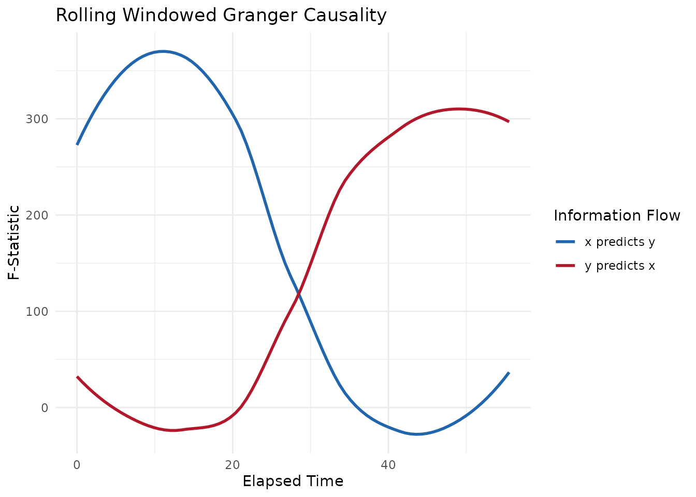
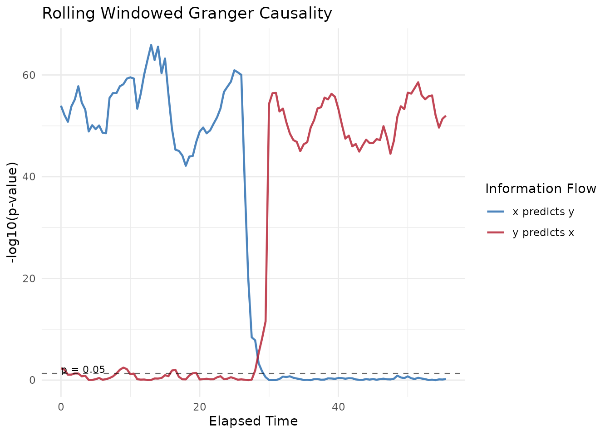

This vignette walks through a complete Windowed Granger Causality (WGC) analysis using the bsync package.
While Windowed Cross-Correlation (WCC) and Windowed Dynamic Time Warping (WDTW) are excellent for quantifying how much two participants are synchronized, they do not inherently prove who is driving the interaction. Granger Causality is a statistical hypothesis test that determines whether the past values of one time series are useful for predicting the future values of another. By applying this test over a rolling window, we can map how leader–follower dynamics shift dynamically during an interaction.
1. What is Granger Causality?
Granger Causality relies on linear autoregressive (AR) models. The core logic is simple:
- We try to predict Person B’s current movement using only Person B’s past movement (the restricted model).
- We try to predict Person B’s current movement using both Person B’s past movement and Person A’s past movement (the unrestricted model).
If adding Person A’s history significantly reduces the prediction error compared to using Person B’s history alone, we say that A Granger-causes B. The bsync package automatically calculates this in both directions (A predicting B, and B predicting A) for every time window.
1.1 Assumptions and Applicability
When is WGC useful?
- Continuous, High-Frequency Data: It is ideal for data like head pose, facial action units, or physiological arousal where behavior at one millisecond is highly dependent on the previous millisecond.
- Finding the “Driver”: When you already know two signals are related, but you need statistical proof of the direction of information flow.
When should you avoid WGC?
- Categorical Data: Granger Causality uses Ordinary Least Squares (OLS) regression, which requires continuous numeric data. It will fail or produce invalid results on binary or categorical states.
- Unknown Lags: Unlike WCC, Granger Causality does not search a massive grid to find the optimal delay. You must specify how many lags back the model should look. If the reaction time between participants is highly variable or unknown, WCC is a better exploratory tool.
- Highly Non-Linear Systems: Because the underlying AR models are linear, WGC might miss complex non-linear coordination unless the sliding windows are kept brief enough that the local interaction approximates a linear relationship.
2. Simulating Realistic Dyadic Data
To demonstrate the workflow, we will simulate an interaction captured at 30 Hz.
In this scenario, we simulate a conversation with a clear shift in conversational dominance.
- Phase 1 (0 to 30s): Person A drives the interaction. Person B mirrors Person A with a short reaction delay of 3 frames (100 milliseconds).
- Phase 2 (30 to 60s): Person B takes over the conversation. Person A begins mirroring Person B with a 3-frame delay.
library(bsync)
library(dplyr)
set.seed(2026)
fs <- 30
n_frames <- 1800 # 60 seconds of data
# Generate smooth baseline movements using a moving average
base_A <- as.numeric(stats::filter(rnorm(n_frames + 50), rep(1/10, 10), circular = TRUE))[1:n_frames]
base_B <- as.numeric(stats::filter(rnorm(n_frames + 50), rep(1/10, 10), circular = TRUE))[1:n_frames]
person_A <- numeric(n_frames)
person_B <- numeric(n_frames)
for (i in 1:n_frames) {
if (i <= 900) {
# Phase 1: A leads B
person_A[i] <- base_A[i]
# B follows A with a lag of 3 frames and slight measurement noise
person_B[i] <- ifelse(i > 3, person_A[i - 3] + rnorm(1, sd = 0.05), rnorm(1, sd = 0.05))
} else {
# Phase 2: B leads A
person_B[i] <- base_B[i]
# A follows B with a lag of 3 frames and slight measurement noise
person_A[i] <- ifelse(i > 903, person_B[i - 3] + rnorm(1, sd = 0.05), rnorm(1, sd = 0.05))
}
}
dyad_data <- data.frame(
time = seq(0, by = 1/fs, length.out = n_frames),
person_A = person_A,
person_B = person_B
)3. Calculating Windowed Granger Causality
We will use the wgranger() function to analyze the
interaction.
We set the ar_order to 3, meaning the model will use the
past 3 frames of history to predict the current frame. We will use a
window_size of 120 frames (4 seconds) to ensure the
regression model has plenty of degrees of freedom to establish
statistical significance. We will slide the window forward by 15 frames
(0.5 seconds) at a time.
wgc_results <- wgranger(
x = dyad_data$person_A,
y = dyad_data$person_B,
time = dyad_data$time,
window_size = 120,
ar_order = 3,
window_increment = 15
)
# View a statistical breakdown of the analysis
summary(wgc_results)
#>
#> ── Windowed Granger Causality Analysis ─────────────────────────────────────────
#> Total Windows: 112
#> Window Size: 120
#> AR Order (Lags): 3
#>
#> ── Significance Summary (p < 0.05) ──
#>
#> • 'x' significantly predicts 'y' in 59 windows (52.7%)
#> • 'y' significantly predicts 'x' in 68 windows (60.7%)The summary output provides an immediate, high-level view of the interaction dynamics. Because we programmed the simulation to have a perfectly even split of leadership, the summary will show that Person A significantly predicted Person B roughly 50% of the time, and Person B significantly predicted Person A for the other 50%.
4. Visualizing the Results
While the summary is helpful, visualizing the rolling statistics shows us when these shifts occurred.
The plot() method for WGC objects allows you to
visualize either the magnitude of the predictive power
(metric = "F") or the statistical significance
(metric = "p").
4.1 Visualizing Effect Size (F-Statistic)
Plotting the F-statistic provides a clear view of the strength of the predictive relationship.
# Plot the F-Statistics with loess smoothing applied
plot(wgc_results, metric = "F", smooth = TRUE)
#> `geom_smooth()` using formula = 'y ~ x'
In this plot, the blue line represents Person A driving Person B, and the red line represents Person B driving Person A. You can see a massive effect size for Person A during the first 30 seconds of the interaction, which drops to near zero as Person B takes over for the final 30 seconds.
4.2 Visualizing Statistical Significance (p-values)
When you plot the p-values, the function automatically converts them
using a -log10 transformation. This makes the plot much
easier to read because highly significant values spike upwards rather
than vanishing toward zero. The plot also automatically includes a
dashed reference line at \(p =
0.05\).
# Plot the raw significance values
plot(wgc_results, metric = "p", smooth = FALSE)
This visualization confirms our simulation perfectly.
- From 0 to 30 seconds, the blue line (
x predicts y) sits high above the \(p = 0.05\) threshold, proving that Person A is significantly driving the interaction. - Right at the 30-second mark, the blue line crashes below the
significance threshold, and the red line (
y predicts x) spikes upwards, mathematically proving the shift in conversational dominance.
By applying Windowed Granger Causality, we have successfully extracted a rigorous, directional statistical inference from continuous behavioral data.